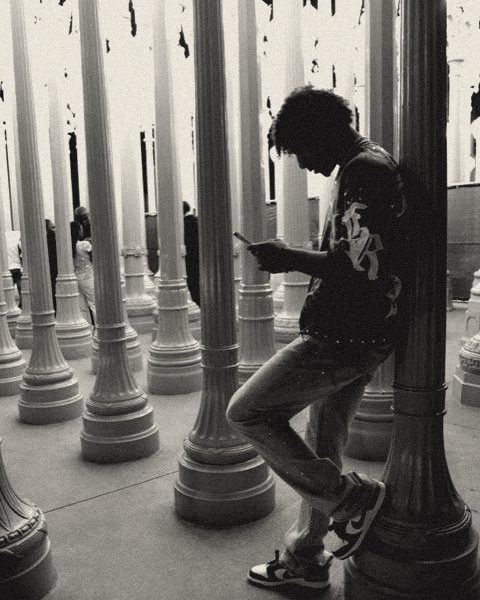

01 · Leads the page
Real Talk
What men keep in. Taking someone back. What a good woman is. You can't change nobody, but you can change you. One problem per clip, your fix at the end. The comments pick the next topic.

You laid it out yourself: up at 5, putting in the work, your kids are the why, and SoFi is where it ends up. This is how we put that on camera every day for the next six months.
From Jersey Jon · BOOMaLA

"Figure out a problem that everybody has and fix it and talk about it."
The content"My kids need me and I'm not going to stop."
The why"Once videos take off, the other stuff will follow."
The patienceNobody gets to a stadium off posting alone. The posts build the fans, the rooms build the reputation, and the numbers open the doors. Here's the climb, rung by rung, and how every piece of this plan feeds it.
2 sets a month. Film every one. Leave every room with 3 numbers.
You sell 150 tickets yourself. That number is what a booking agent asks for.
A sold-out LA theater night, or support on a tour that plays one.
Same roof as SoFi. Win this room and you've already walked in the building.
Across the street. Usually reached as an opener first.
Most first SoFi sets come as the opener on a stadium tour. Then your own.
YouTube Theater and Kia Forum are both in Inglewood, minutes from SoFi. Every rung after the club is in the same neighborhood as the goal.
Pick 2 a month and become a regular: the Leimert Park Music Series at The World Stage, the hip-hop open mic night at The Slipper Clutch, Pauhaus in WeHo on Mondays, the Tuesday songwriter showcase at Hotel Cafe. Same rooms, same faces. That's how you get booked.
The whole gear and music-tech world in one building. Producers, brands, engineers. Go for the networking, not the stage.
The Grammys are at Crypto.com Arena. The whole week the city is full of label parties, showcases and panels. Get into rooms, film the week.
The game is at SoFi on Feb 14, Valentine's Day. Aliyah drops Friday the 12th. Shoot outside the stadium that week: "one day it's my name on that building."
Thousands of industry people in one town. Go, play the unofficial day parties, and apply for an official 2028 showcase when applications open next summer.
Dates not announced yet. The biggest week of the year for our lane in LA. Plan to be in the rooms around it.
Where strangers find you. Same 3 posts a day as IG. Every song gets a 15-second sound people can use.
Where fans become a community. Stories every day, answer every comment in the first hour.
Full episodes, full sessions, the music videos. Every Short points back to the long version.
Monthly listeners and saves are what agents and labels check first. Pitch every new song in Spotify for Artists before it drops.
Daily posting locked in. Baseline numbers logged.
First song with a full rollout. Super Bowl week content.
Your first LA headline date on the calendar.
Real Talk leads. You named it, and your podcast, The Thrizzl3 Effect, is where it lives. The music and the grind carry the weekly shows. The other two keep it human.
What men keep in. Taking someone back. What a good woman is. You can't change nobody, but you can change you. One problem per clip, your fix at the end. The comments pick the next topic.

Live and acoustic sessions, new songs and the 3's Up freestyles. This is where "Do your shi 3" lives.

5 a.m. wake-up, Eric Thomas in your ears, push-ups and squats at home or the gym. "Look good, feel good." No rap before 12: gospel, church music and old-school R&B to start the day. We shoot it in your words, without anybody else's audio.

Outfits, fit changes, cooking, home. The softer side lives on @3forthrizzl3.

Being a dad on the way up, and your basketball days. You decide what gets shown and how. Nothing goes up you haven't said yes to.
Same shows, same days, so people know when to come back.
The morning routine and your message to start the week. Gospel and old-school R&B only.
The GrindNew episode of your podcast: one problem, your fix.
Real TalkYour R&B side: singing, a song, an acoustic take.
The MusicYour freestyle of the week.
The MusicThe outfit change, also on @3forthrizzl3. On a drop week, it's Drop Friday.
Day in the LifeThe best moment from Tuesday’s episode, posted as a collab with @jerseyjon76.
Real TalkGospel, family, the week ahead. Stories, or one quiet post.
The WhyStories every day: behind the scenes, polls on the next Real Talk topic, reposts and countdowns to drops.
Every post for your first week: which clip, what goes on screen, the caption and the tags. December is Prada month, so put the Prada link in your bio before Monday. Tap a day, hit play on the clip to watch it, tap Copy caption, paste it into Business Suite. Same caption and on-screen words go on the YouTube Short.
ClipOpen in Drive ↗ L3_IG05_Done-In-The-Dark
On-screenWHAT'S DONE IN THE DARK
WHAT'S DONE IN THE DARK COMES TO THE LIGHT. NEW WEEK. MOVE RIGHT. #LTHrizzL3 #NoRapBefore12 #realtalk #ImFromThe8
Tag + soundSound: gospel or old-school R&B. No rap.
ClipOpen in Drive ↗ L3_BB09_They-Quit-I-Dont
On-screenTHEY QUIT. I DON'T.
MOST PEOPLE QUIT RIGHT BEFORE IT HAPPENS. NOT ME. 🏀 PRADA OUT NOW, LINK IN BIO. #LTHrizzL3 #Prada #DoYourShi3 #hiphop #ImFromThe8
Tag + soundSound: Prada, from the Instagram music library.
ClipOpen in Drive ↗ L3_IG09_Meet-L3
On-screenMEET L3
IF YOU NEW HERE: I'M L3. I'M FROM THE 8. I SING, I RAP, I TELL IT HOW IT IS. ENERGY DON'T LIE. STICK AROUND. 👊🏾 #LTHrizzL3 #ImFromThe8 #newartist #hiphop
Tag + soundTag @3forthrizzl3. Pin this post to your profile. Check the audio: only Prada or no song under it.
Stories: 9:30 AM: Countdown: "FIRST POST TONIGHT 7PM" · 9:30 PM: Repost Meet L3
ClipOpen in Drive ↗ L3_IG03_Cant-Change-Nobody
On-screenYOU CAN'T CHANGE NOBODY
YOU CAN'T CHANGE NOBODY. BUT YOU CAN CHANGE YOU. #LTHrizzL3 #NoRapBefore12 #realtalk #ImFromThe8
Tag + soundSound: gospel or old-school R&B. No rap.
ClipOpen in Drive ↗ L3_BB18_My-New-Girlfriend
On-screenMY NEW GIRLFRIEND
BASKETBALL WAS MY FIRST LOVE. MUSIC'S THE ONE NOW. 🎶 PRADA, LINK IN BIO. #LTHrizzL3 #Prada #DoYourShi3 #hiphop #ImFromThe8
Tag + soundSound: Prada, from the Instagram music library.
ClipOpen in Drive ↗ L3_IG04_I-Took-Her-Back
On-screenI TOOK HER BACK
I TOOK HER BACK. WOULD YOU HAVE? BE HONEST IN THE COMMENTS. 👇🏾 THE THRIZZL3 EFFECT, EVERY TUESDAY. #LTHrizzL3 #TheThrizzl3Effect #realtalk #ImFromThe8
Tag + soundPin the best comment. Repost it in your 9:30 PM story.
Stories: 9:30 AM: "NEW THRIZZL3 EFFECT AT 7" · 9:30 PM: Repost the best comment
ClipOpen in Drive ↗ L3_IG08_Move-How-I-Move
On-screenMOVE HOW I MOVE
I MOVE HOW I MOVE. NO APOLOGIES. #LTHrizzL3 #NoRapBefore12 #realtalk #ImFromThe8
Tag + soundSound: gospel or old-school R&B. No rap.
ClipOpen in Drive ↗ L3_BB14_Not-A-Rapper
On-screenI'M NOT A RAPPER. I'M AN ARTIST.
DON'T CALL ME A RAPPER. I'M AN ARTIST. PRADA, LINK IN BIO. #LTHrizzL3 #Prada #DoYourShi3 #hiphop #ImFromThe8
Tag + soundSound: Prada, from the Instagram music library.
ClipOpen in Drive ↗ L3_IG07_Whats-A-Good-Woman
On-screenWHAT'S A GOOD WOMAN?
WHAT'S A GOOD WOMAN TO YOU? TELL ME BELOW. 🌙 RYTHM & 3, EVERY WEDNESDAY. #LTHrizzL3 #RythmAnd3 #rnb #ImFromThe8
Tag + soundSound: So Fine under it, low. Story at 9:30 PM: "WHO YOU SENDING THIS TO?"
Stories: 9:30 AM: Poll: "WHAT'S A GOOD WOMAN?" · 9:30 PM: Repost the best answers
ClipOpen in Drive ↗ L3_IG12_I-Can-Affect-Me
On-screenBUT I CAN AFFECT ME
HAPPY THANKSGIVING. I CAN'T CONTROL EVERYBODY. BUT I CAN AFFECT ME. 🙏🏾 #LTHrizzL3 #NoRapBefore12 #realtalk #ImFromThe8
Tag + soundSound: gospel. Share it to your story too.
ClipOpen in Drive ↗ L3_BB13_If-I-Eat-We-All-Win
On-screenIF I EAT, WE ALL EAT
IF I EAT, WE ALL EAT. THAT'S THE TEAM. 🍽️ PRADA, LINK IN BIO. #LTHrizzL3 #Prada #DoYourShi3 #hiphop #ImFromThe8
Tag + soundSound: Prada, from the Instagram music library.
ShootNEW: your first 3's Up
On-screen3'S UP 🎤 #1
3'S UP. EPISODE 1. GRATEFUL AND STILL HUNGRY. NEW FREESTYLE EVERY THURSDAY. 🎤 #LTHrizzL3 #3sUp #freestyle #hiphop #ImFromThe8
Tag + soundShoot it before Thursday: 30 to 60 sec, one take, vertical. Over a beat, not an unreleased song. Prompt: "grateful and still hungry."
Stories: 9:30 AM: "3'S UP TONIGHT 7PM" · 9:30 PM: Fan reactions to the freestyle
ClipOpen in Drive ↗ L3_IG06_You-Dont-Deserve-That
On-screenYOU DON'T DESERVE THAT
IF THEY DON'T TREAT YOU RIGHT, YOU DON'T DESERVE THAT. REMEMBER IT. #LTHrizzL3 #NoRapBefore12 #realtalk #ImFromThe8
Tag + soundSound: gospel or old-school R&B. No rap.
ClipOpen in Drive ↗ L3_BB15_Bucket-Reel
On-screenNEVER CAME OFF THE BENCH
NEVER CAME OFF THE BENCH. NOT ONCE. 🏀 PRADA, LINK IN BIO. #LTHrizzL3 #Prada #DoYourShi3 #hiphop #ImFromThe8
Tag + soundSound: Prada, from the Instagram music library.
ClipOpen in Drive ↗ L3_BB04_Changed-My-Whole-Image
On-screenWHY I CHANGED MY WHOLE IMAGE
CHANGED MY WHOLE IMAGE BECAUSE THE ROOMS I'M WALKING INTO MATTER. FIT CHECK, EVERY FRIDAY. #LTHrizzL3 #FitCheck #ImFromThe8
Tag + soundTag the brands you're wearing. Tag your barber if it's a fresh cut.
Stories: 9:30 AM: Pieces laid out on the bed · 9:30 PM: The fit out in the world
ClipOpen in Drive ↗ L3_IG10_Men-Keep-It-In
On-screenMEN KEEP A LOT IN
MEN KEEP A LOT IN. SAY IT ANYWAY. #LTHrizzL3 #NoRapBefore12 #realtalk #ImFromThe8
Tag + soundSound: gospel or old-school R&B. No rap.
ClipOpen in Drive ↗ L3_IG01_I-Go-Through-Music
On-screenI GO THROUGH MUSIC
HOW I GET THROUGH IT? MUSIC. EVERY TIME. PRADA ON REPEAT, LINK IN BIO. #LTHrizzL3 #Prada #DoYourShi3 #hiphop #ImFromThe8
Tag + soundSound: Prada under the end.
ClipOpen in Drive ↗ L3_IG11_Not-Gonna-Bottle-It
On-screenI'M NOT GONNA BOTTLE IT IN
MEN KEEP A LOT IN. I'M NOT GONNA BOTTLE IT IN NO MORE. FROM THE THRIZZL3 EFFECT. #LTHrizzL3 #TheThrizzl3Effect #realtalk #ImFromThe8
Tag + soundFrom your account only. Schedule it with the rest.
Stories: 9:30 AM: Poll: next Thrizzl3 Effect topic · 9:30 PM: Repost the 7 PM clip
ClipOpen in Drive ↗ L3_IG02_Tell-You-How-It-Is
On-screenTELL YOU HOW IT IS
I'LL TELL YOU HOW IT IS. NO FILTER. HAPPY SUNDAY. #LTHrizzL3 #NoRapBefore12 #realtalk #ImFromThe8
Tag + soundSound: gospel.
ClipOpen in Drive ↗ L3_BB07_Why-I-Play
On-screenWHY I PLAY
THIS IS WHY I PICK UP THE BALL. FOR HER. ❤️ PRADA, LINK IN BIO. #LTHrizzL3 #Prada #DoYourShi3 #hiphop #ImFromThe8
Tag + soundSound: Prada, from the Instagram music library.
ClipOpen in Drive ↗ L3_BB16_Bubbles
On-screenMY BASKETBALL WAS NAMED BUBBLES
BEFORE L3, MY BASKETBALL HAD A NAME. BUBBLES. 😂 DON'T ASK. #LTHrizzL3 #OffTheClock #ImFromThe8
Tag + soundStory at 8 PM: "THIS WEEK: NEW 3'S UP THURSDAY."
Stories: 9:30 AM: Sunday music: what you're playing · 9:30 PM: "THIS WEEK: ..." and next week's 3's Up date
Thursday's 3's Up is the one post you still need to shoot. Everything else is already cut and waiting in your clips folder.
Questions for every show. Pick one, let it run, and the best 30 to 60 seconds is the clip. Real Talk always ends on your fix.
3's Up prompts
What each month is about, so the questions fit the moment.
Three posts a day, every day, and every video also goes up as a YouTube Short. Your "no rap before 12" rule sets the clock.
The grind, a message, gospel or old-school R&B under it. No rap.
The music: Prada, So Fine or Remind Em as the sound. Only songs that are already out.
That day's weekly show from the schedule above. The main post.
3 a day on IG, each video also a YouTube Short.
The first week and a half, ready to go.
One half-day every week, not every two.
One clip a day you shoot yourself: 5 a.m., the fit, the studio.
Prada now. JOINTED UP in January. Aliyah opens 2027 as the first new drop, then a new song the second Friday of every month. Each one gets four weeks of content behind it, so no song comes out cold.
The push. Prada is the link in your bio and the sound under the noon posts.
Takes over the link in bio and the noon sound on Jan 1.
The first new drop. Valentine's weekend, the Big Game at SoFi that Sunday.
The Thrizzl3 Effect feature.
With the second music video.
Six-month mark.
Your top three keep working: Prada/L3, So Fine and Remind Em are already the ones people play. They carry the 12 p.m. posts between drops, and live versions of them go in the February session.
Five weeks, start to finish, starting the week of Jan 8. Prada and JOINTED UP do the heavy lifting on the way in.
The three weeks after: Aliyah is the sound under every noon post, the acoustic version drops, and every fan who answers "Who's your Aliyah?" or uses the sound gets reposted. Pre-saves, saves and Shorts views tell us what the next drop needs.
December and January run on the clips we already have plus our own shoot days. February is the big one: a full live session.
Each partner puts you in front of a new crowd.
Artists who come on the show become features and collabs. Every guest brings a new crowd.
A location and a trainer for the morning shows.
Shoot-day looks, tagged on every post.
Beats for your songs and for 3's Up, producer credited.
Pickup runs and league games. I'll run with you.
One sitting on Sunday loads the whole week: 3 posts a day, every one also a YouTube Short, plus stories. It all goes out on its own, so the rest of the week you make music and answer comments.
Three things and you never touch them again.
Profile → ☰ → Account type and tools → Switch to professional → Creator
You keep your followers and everything you've posted. You also get Insights, which shows when your people are online.
Business Suite needs a Facebook Page linked to your Instagram before it can schedule stories. If you don't have one, make a simple "LTHrizzL3" artist page. Nobody has to see it.
Instagram → Edit profile → Page → Connect or create
Download the Meta Business Suite app, or open business.facebook.com on a laptop. The laptop is faster for batching. Log in and make sure @lthrizzl3 shows up at the top.
Do the same for @3forthrizzl3 if you want the soft-side posts scheduled too. You can switch between accounts at the top.
Three posts a day at 7 a.m., 12 p.m. and 7 p.m., plus two stories. Your "no rap before 12" rule sets the clock. After two weeks, step 14 shows you how to fine-tune the times.
Same times every week, so people learn when to come back.
Load Monday through Sunday in one sitting. Uncheck these each Sunday and run them again.
Open the shared folder and grab 21 clips, three per day, plus 14 story pieces (photos, short clips, behind the scenes). Add the clips you shot on your phone this week.
Name them day + time: MON_7AM · MON_12PM · MON_7PM · TUE_7AM … so you always know what goes where
Write all 7 at once in your Notes app, so you're not thinking about it one at a time. Use this shape:
[ONE LINE THAT STOPS THE SCROLL] [One or two lines: the point, in your words] I'm from the 8. #lthrizzl3 #realtalk #rnb #roadtosofi
Music days get "Do your shi 3" instead of "I'm from the 8." Keep the two separate.
Skip Saturday 7 p.m. The Effect clip goes up as a collab with @jerseyjon76, and collab posts can't be scheduled. That one goes up live (step 11).
Leave polls and question boxes for live. Those stickers work best posted from the Instagram app in the moment.
Open Planner in Business Suite. You should see 20 reels and 14 stories across the week. Any gap means something didn't save.
Saturday's Effect clip can be scheduled here. Only the IG collab has to go up live.
Screenshot the Planner and text it to Jon. A second set of eyes catches a typo before 2,000 people do.
The schedule posts for you. These are the parts that need you there.
Set phone alarms for 7:05 a.m., 12:05 and 7:05 p.m. Reply to every comment in that first hour. Early replies keep the post moving.
On top of the two scheduled ones: a poll for next Tuesday's Real Talk topic, a repost of a fan, or a countdown to a drop. Takes 30 seconds.
Open Insights and look at when your followers are most active. If the busiest hour is different from the Times tab, move your drops there.
Profile → Professional dashboard → Total followers → Most active times
These are your decisions. Tap each one off as we settle it.
Even if the views aren't there right away. One clip takes off and the rest follows. Let's work.